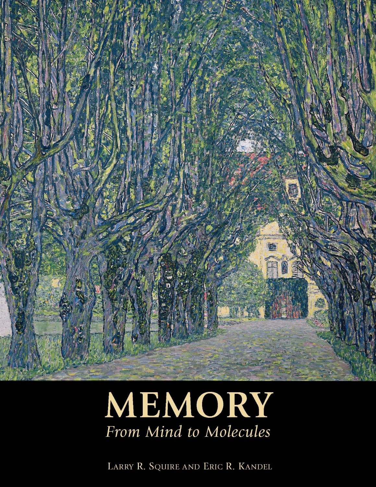
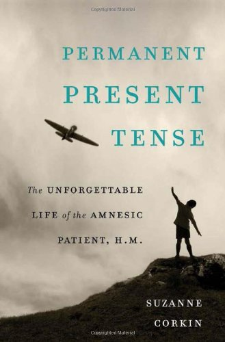
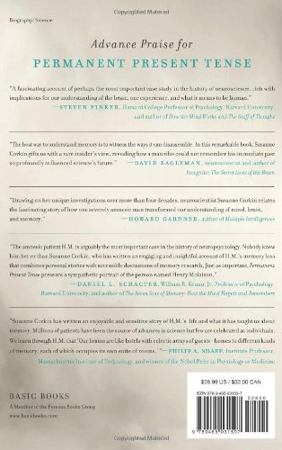
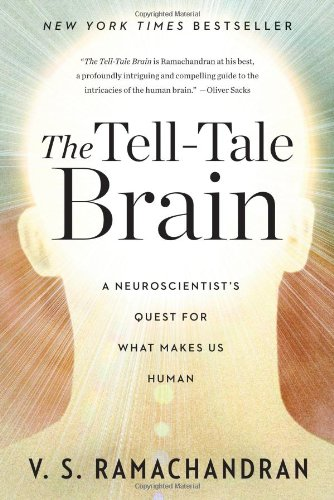

This video, created by Nucleus Medical Media, shows the anatomy and function of the brain using color coded areas.
Pinky and brain singing parts of the brain in a comic way.
Dr James Parkinson wrote the first description of 'The Shaking Palsy', or what is now known as Parkinson's disease, in 1817. He was a man for the ages and lived in London around the Age of Enlightenment. He was a political activist, geologist, scientist, humanist, leading public health and ethical thinker and a doctor to the people in the Parish of St Leonard's, Shoredicth, North London. This short documentary film takes the viewer through James's life and gives a glimpse of the streets in which he lived, worked and first came across people who had Parkinson's disease. This film has been carefully and lovingly researched and filmed by Dr David Williams (who is also a Neurologist) and is narrated by Dr Gerald Stern. It has been shown in London, Berlin, Chicago and New Orleans.
The second program in the Multiple Scleroses From A to Z series is presented by the distinguished MS researcher and clinician, Dr. Jock Murray. Dr. Murray is acknowledged as the world's leading expert on the history of MS. He is from Halifax, Nova Scotia, where he has served as dean of Dalhousie Medical School, chairman of the Department of Neurology, and founder and director of the MS Clinic.
A Portrait of Alzheimer's Disease
Bruce Reed, the Associate Director of the Alzheimer's Disease Research Center at UC Davis presents a comprehensive update on Alzhemier's Disease. What is Alzhemier's Disease and can it be cured or treated? Can one predict who will ultimately be afflicted by this disease? What is the current research being done on Alzheimier's Disease? Series: "The Coming of Age Lecture Series" [5/2008] [Health and Medicine] [Show ID: 14217]
|
Santiago Ramon y Cajal (1852-1934) Published on Apr 30, 2013 Remembering the Spanish "father of neuroscience" on his 161st birthday. His works on the anatomy and physiology of the nervous system unveiled its very fabric. [Remark: No verbal information in this video. Only with background music.] |
Santiago Ramon y Cajal, founder of Neuroscience Published on Nov 9, 2013 Santiago Ramón y Cajal was born in Navarre, Spain, on May 1, 1852. He trained in medicine and physiology, teaching at the University of Valencia and Complutense University (Madrid, Spain). His original pioneering investigations of the microscopic structure of the brain have led him to be designated as the father of modern neuroscience. His medical artistry was legendary, and hundreds of his drawings illustrating the delicate arborizations of brain cells are still in use for educational and training purposes. |
|
History of Neuroscience: Eric Kandel Published on Jul 5, 2012 Society for Neuroscience archival interview with American neuroscientist and Nobel Prize winner Eric R. Kandel. The interview took place July 24, 2001. This video is part of the Society for Neuroscience's autobiography series, "The History of Neuroscience in Autobiography," detailing the lives and discoveries of eminent senior neuroscientists. |

Memory: From Mind to Molecules |
A Conversation With Eric Kandel Uploaded on Jan 11, 2011 A Conversation With Nobel Laureate Eric Kandel, Who Continues to Look Forward at 80. More at http://news.columbia.edu/oncampus/1787 |
|
Suzanne Corkin - Remembering H.M. Published on Mar 12, 2012 February 15, 2012 |


Permanent Present Tense: The Unforgettable Life of the Amnesic Patient, H. M. |
History of Neuroscience: Brenda Milner Published on Jul 5, 2012 Society for Neuroscience archival interview with Canadian neuroscientist Brenda A. Milner. The interview took place Dec. 6, 1996. This video is part of the Society for Neuroscience's autobiography series, "The History of Neuroscience in Autobiography," detailing the lives and discoveries of eminent senior neuroscientists. |
The Mystery of Memory, the first documentary within the AstraZeneca Nobel Medicine Initiative, is a 30 minute documentary which delves into the foundations of today's memory research which was laid by early 20th Century Nobel Prize-awarded pioneers, and uncovers how today's neuroscientists are helping to find new treatments for disorders of memory.
|
HHMI 2008 Holiday Lectures On Science - Making Your Mind: Molecules, Motion and Memory |
|
|
Mapping Memory in the Brain Uploaded on Sep 1, 2009 Eric R. Kandel, Howard Hughes Medical Institute investigator, probes into the mind to demonstrate how it is much more complex than just a series of processes carried out by the brain. The brain produces our every emotional, intellectual and athletic act. It allows us to acquire new facts and skills, and to remember them for as long as a lifetime. Memory exists in two major forms, each located in different brain regions. Explicit memory is for people, places, and objects. In contrast, implicit memory serves perceptual and motor skills. In concert, these two memory systems help make us who we are. |
Building Brains: The Molecular Logic of Neural Circuits Uploaded on Sep 15, 2009 Thomas M. Jessel, Howard Hughes Medical Institute Investigator, explores the human brain, the sophisticated product of 500 million years of vertebrate evolution, assembled during just nine months of embryonic development. The functions encoded by its trillion nerve cells direct all human behavior. Yet the brain is a biological organ made from the same building blocks as skin, liver and lung. How does the brain acquire its remarkable computational power? Answers lie in the details of its construction -- the cellular and molecular mechanisms that drive the formation of thousands of neural circuits, each wired for a specific behavior. |
|
Plan of Action: How the Spinal Cord Controls Movement Uploaded on Oct 14, 2009 Thomas M. Jessell, Howard Hughes Medical Institute Investigator, examines the neural circuits that control our movements. Neural circuits give us a glimpse of how brain wiring and circuit activity control specific behaviors, including the movement of our limbs. Consider baseball player Lou Gehrig's remarkable hand-eye coordination, or the purity of cellist Jacqueline du Pré's tone. Yet, both examples also remind us of the fragility of the motor system: Gehrig succumbed to amyotrophic lateral sclerosis and du Pré to multiple sclerosis. Neural circuits, sensory feedback systems and signals from the brain permit us to change motor strategies to accommodate to an ever-changing world. |
Memories are Made of This Uploaded on Oct 2, 2009 Eric R. Kandel, Howard Hughes Medical Institute Investigator, examines whether the brain's two major memory systems, implicit and explicit, have any common features. Implicit and explicit memory both have a short-term component lasting minutes, such as remembering the telephone number you just looked up, and a long-term component that lasts days, weeks, or a lifetime, such as remembering your mother's birthday. Short-term memory is mediated by modifications of existing proteins, leading to temporary changes in the strength of communication between nerve cells. In contrast, long-term memory involves alterations of gene expression, synthesis of new proteins and growth of new synaptic connections. |
A Lecture held by to-be Nobel Laureate Eric Kandel: "Genes, synapses and memory". Introduction by Prof Lennart Wetterberg. The lecture was held Sept 6th 1993 and is put online for historical interest. Camera: Ebba Nordin. Watch current Stockholm Psychiatry Lectures in HD at http://www.youtube.com/psychiatrylect...
|
Secrets of the Mind Nova HD 1080p (V. S. Ramachandran) Published on Jun 9, 2013 A blind man can see. Another feels pain in his missing arm. One believes he's God. A son thinks his parents are imposters. Are their thoughts real or just "in their heads"? In this remarkable NOVA, pioneering brain detective V.S. Ramachandran, hailed as "the Sherlock Holmes of neuroscience," tackles four mysterious cases and delivers mind-boggling conclusions. |

The Tell-Tale Brain: A Neuroscientist's Quest for What Makes Us Human The patients appear on the Youtube "Secrets of the Mind Nova HD" are described in full details in this book. |
VS Ramachandran: 3 Clues to understanding Your Brain Uploaded on Oct 23, 2007 http://www.ted.com Vilayanur Ramachandran tells us what brain damage can reveal about the connection between celebral tissue and the mind, using three startling delusions as examples. |
This lecture explores neurological and psychiatric scenarios where individuals are more creative than the norm. Could there be common features in these diver.
Part 1 | Part 2 Speaking at the Mind and its Potential conference, writer, broadcaster and neuroscientist Baroness Susan Greenfield gives a lively presentati.
This lecture explores neurological and psychiatric scenarios where individuals are more creative than the norm. Could there be common features in these diver.
For more information on Mind; Its Potential, visit Also check out our Think; Be Happy blog .
This lecture explores neurological and psychiatric scenarios where individuals are more creative than the norm. Could there be common features in these diver.
Once upon a time stories lulled us to sleep as children. They continue to influence how we understand, explain and interact with the world as adults. We shap.
Baroness Susan Greenfield believes growing up - kills creativity. As we finally learn to apply meaning and relevance to an event (Exploring Different Paths.
Notting Hill Editions author Susan Greenfield discusses her title on the biological interpretations of the elusive concept of identity.
Creative Innovation interview with Baroness Susan Greenfield Please feel free to leave your comments below..
Watch the full video and more at According to neuroscientist Susan Greenfield, the nature-nurture debate has been rendered ir.
Baroness Greenfield talks about the ways business leaders can manage risk, creativity and teams and how the impact of the digital world will be reflected in .
No one has a brain like yours! Why is your brain so special? Watch this video of prominent neurologist Baroness Susan Greenfield to find out. Baroness Susa.
Lecture held at the University of St Andrews on the 25th of April 2012 The St Andrews Prize for the Environment Mind Change: The New Climate Change? Baroness.
Baroness Susan Greenfield speaking at the University of Western Australia on the subject of the future of the brain. Circa 2012. CHECK OUT .
For more information on Mind; Its Potential, visit Also check out our Think; Be Happy blog .
APA TV interviewed the APA Annual Meeting 2013 International Guest Lecturer, Baroness Susan Greenfield about her work in the area of new technology/social me.
For more information on Mind; Its Potential, visit Also check out our Think; Be Happy blog .
Baroness Susan Greenfield CBE, is a British scientist, writer, broadcaster and member of the House of Lords. Specialising in the physiology of the brain, Sus.
In the past few years, Susan Greenfield developed a keen interest in the impact of modern technologies on the mind and consciousness. Invited to the INVEST 2.
Baroness Susan Greenfield, neuroscientist, writer, and broadcaster explains how the human brain is changing at Business in the Community's The Future for Goo.
For more information on Mind; Its Potential, visit Also check out our Think; Be Happy blog .
We interviewed Baroness Susan Greenfield about her research when she visited Science World 2011. Baroness Greenfield discusses her current research into the .
|
Controversial Topic - Consciousness |
||
|
The Neuroscience of Consciousness Published on Nov 28, 2012 Baroness Susan Greenfield CBE, is a British scientist, writer, broadcaster and member of the House of Lords. Specialising in the physiology of the brain, Susan researches the impact of 21st century technologies on the mind, how the brain generates consciousness and novel approaches to neurodegenerative diseases such as Alzheimer's and Parkinson's. |
How does the brain generate consciousness? Baroness Susan Greenfield: ANU Uploaded on Sep 19, 2010 Baroness Susan Greenfield CBE Hon FRCP, Member, House of Lords, United Kingdom, Professor of Synaptic Pharmacology, Lincoln College, Oxford University presents this lecture: How does the brain generate consciousness? This video was recorded at The Australian National University on 30 August 2010, and was the keynote speech at a John Curtin School of Medical Research symposium: New Perspectives in Clinical Neuroscience and Mental Health. |
Antonio Damasio: The quest to understand consciousness Uploaded on Dec 19, 2011 http://www.ted.com Every morning we wake up and regain consciousness -- that is a marvelous fact -- but what exactly is it that we regain? Neuroscientist Antonio Damasio uses this simple question to give us a glimpse into how our brains create our sense of self. |
|
BBC Horizon - The Secret You Uploaded on Jan 4, 2011 With the help of a hammer-wielding scientist, Jennifer Aniston and a general anaesthetic, Professor Marcus du Sautoy goes in search of answers to one of science's greatest mysteries: how do we know who we are? While the thoughts that make us feel as though we know ourselves are easy to experience, they are notoriously difficult to explain. So, in order to find out where they come from, Marcus subjects himself to a series of probing experiments. |
||
News for Obama unveils funding for brain mapping ...
Obama Unveils Details of New Human Brain Mapping Initiative
TIME - 22 hours ago
Obama Unveils Details of New Human Brain Mapping Initiative ... U.S. President Barack Obama delivers his State of the Union speech on Capitol Hill in ... The goal of the project, referred to as the Brain Research through Advancing ... The insane scale of funding in the 21st century cannot be justified.
President Obama Unveils Brain Mapping Project
UCSF Today - 19 hours ago
Obama unveils details on brain-mapping initiative
Fox News - 22 hours ago
Obama unveils funding for brain mapping project (full speech) - The ...
www.washingtonpost.com/.../obama-unveils
Obama unveils funding for brain mapping project (full ... - YouTube
http://www.tedxvienna.at/
http://www.facebook.com/tedxvienna
Moritz Helmstaedter is a neuroscientist dedicated to mapping connectomes, the complex networks of nerve cells in the brain. A medical doctor and physicist by training, Moritz completed his doctoral thesis with Nobel laureate Bert Sakmann at the Max Planck Institute for Medical Research in Heidelberg, Germany. During his post-doctoral work, together with Winfried Denk and Kevin Briggman, he developed methods to map nerve cell networks using electron microscopes and computer analysis tools. This is making it possible for the first time to decipher large complex networks in the brain at single-cell resolution. He is currently setting up his own laboratory at the Max Planck Institute of Neurobiology in Munich, where he aims to understand the computations in sensory cortex, and to unravel what distinguishes a human brain from, say, that of a mouse, at the structural level. Moritz has pioneered crowd sourcing for connectomics, engaging more than a hundred students to work together to analyze the immense amounts of data. Going forward, he aims at motivating thousands of curious minds to collaborate online on the task of reconstructing the powerful and fascinating neuronal networks of the brain.
http://www.mhlab.net/
About TEDx
In the spirit of ideas worth spreading, TEDx is a program of local, self-organized events that bring people together to share a TED-like experience. At a TEDx event, TEDTalks video and live speakers combine to spark deep discussion and connection in a small group. These local, self-organized events are branded TEDx, where x = independently organized TED event. The TED Conference provides general guidance for the TEDx program, but individual TEDx events are self-organized.* (*Subject to certain rules and regulations)
http://www.tedxvienna.at/
http://www.facebook.com/tedxvienna
Does the brain's wiring make us who we are?
Neuroscientists Sebastian Seung and Anothony Movshon debate minds, maps, and the future of their field.
Moderated by Robert Krulwich and Carl Zimmer
Introduction by Stuart Firestein
Columbia University
April 2, 2012
http://www.ted.com Sebastian Seung is mapping a massively ambitious new model of the brain that focuses on the connections between each neuron. He calls it our "connectome," and it's as individual as our genome -- and understanding it could open a new way to understand our brains and our minds.
TEDTalks is a daily video podcast of the best talks and performances from the TED Conference, where the world's leading thinkers and doers give the talk of their lives in 18 minutes. Featured speakers have included Al Gore on climate change, Philippe Starck on design, Jill Bolte Taylor on observing her own stroke, Nicholas Negroponte on One Laptop per Child, Jane Goodall on chimpanzees, Bill Gates on malaria and mosquitoes, Pattie Maes on the "Sixth Sense" wearable tech, and "Lost" producer JJ Abrams on the allure of mystery. TED stands for Technology, Entertainment, Design, and TEDTalks cover these topics as well as science, business, development and the arts. Closed captions and translated subtitles in a variety of languages are now available on TED.com, at http://www.ted.com/translate. Watch a highlight reel of the Top 10 TEDTalks at http://www.ted.com/index.php/talks/top10